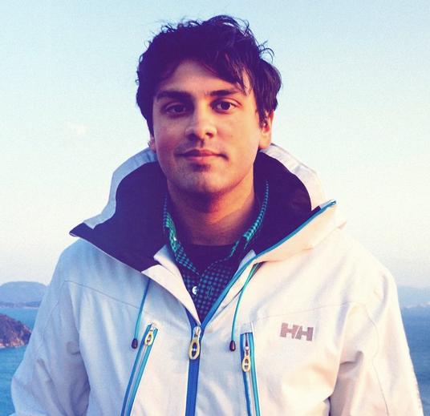
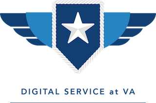

Kavi Was Here: A History
This may shock you, but tech operations around the Board were not always the smooth-running operation that you see today. In the far distant past (YOU think it took a long time to get Dispatch into Prod???), when no one at the Board had ever heard of something called the Digital Service and there was actually decent space to hold a meeting at 425 I Street, a couple of jeans-and-t-shirt kids walked in the door and suggested they could solve all the world's problems.
The Lock Down
Imagine this:
- Setting: a super-sized government contractor's meeting space, where three long tables were awkwardly facing each other in roughly a U-shape, where all parties would be forced to finagle IT agreements over a two-day lockdown session.
- Our Board representatives at the table, not too long after completing the famous "End-to-End Scan" of the appeals process, were convinced we knew what we wanted, but had little idea what it actually looked like or how it was going to happen.
- The Board had been lucky enough to have one semi-famous tech guy on board, Presidential Innovation Fellow Robert Sosinski (those seeing this can consider him something akin to your great-grandfather), who had hooked us up with a group none of us had ever heard of called the "Digital Service".
- The Board arrived at the multi-day lockdown and was greeted by a few respectable types (Shawn, Em-Tav, Jeff, maybe someone else I'm forgetting), Alex (let's be real here - he was still in high school, wasn't he?), and some guy who was quite obviously a Hoosier. His name, I believe, was "Caffee".
- They all wore tennis shoes. We were screwed.
So, there's this group called Digital Services?

(always been curious as to who is on the other side of that camera...dude looks hungry!)
Needless to say, the Board pretty quickly became reliant on the Digital Service (we had promised them all our money, anyway), though it always was a little unclear exactly what the relationship was. In the early days, they spent most of their time over at 1800 G, clearly wondering what in the hell they had gotten themselves into, occasionally spending a few hours in conference rooms at the Board. They seemed at least a little productive - though we weren't exactly sure why the whole "use technology to fix the appeals thing" took more than the first couple of months to get fully wrapped up; seemed simple enough in concept - but Kavi and his boss Giuseppe, along with Alex and new teammates Shane and Ori and Paul managed to turn out a Certification tool (which was demo'd at Board town halls multiple times, to the confusion of many an attorney), and eX, which sure sounded nice. On the whole, we were sufficiently impressed that we decided to do them a favor and let them stick around. Eventually, all of you joined them.
A legacy

But all joking aside, under Kavi and Giuseppe's leadership, along with the other incredible folks they convinced to join the project, this effort has already been incredibly successful. Multiple products in production. A full ATO. A smooth leadership transition. A roadmap for finishing the job. Honestly, no one could have asked for more from you guys. You've done some great work.
So for all the days you absolutely hated government; for all the times we drove you to the edge of screaming or crying or quitting; for all the times you said "I can't wait to get the f*** out of this place" (real quote); everyone knows that when you leave you'll have left a big piece of your heart and soul here in this project.